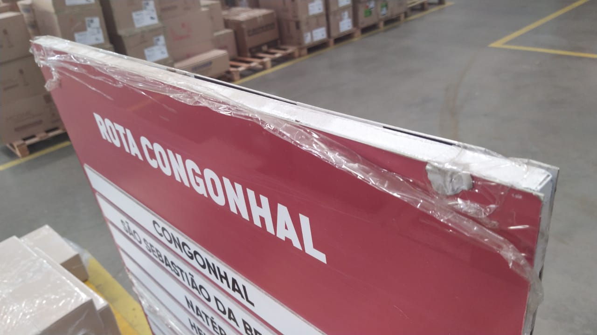
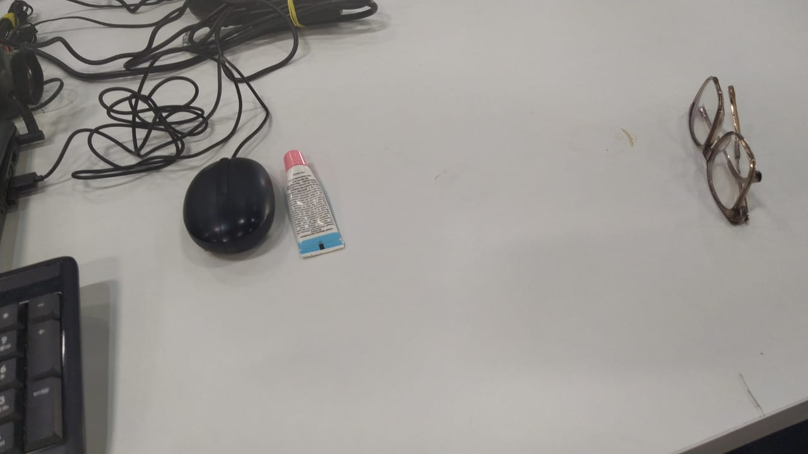
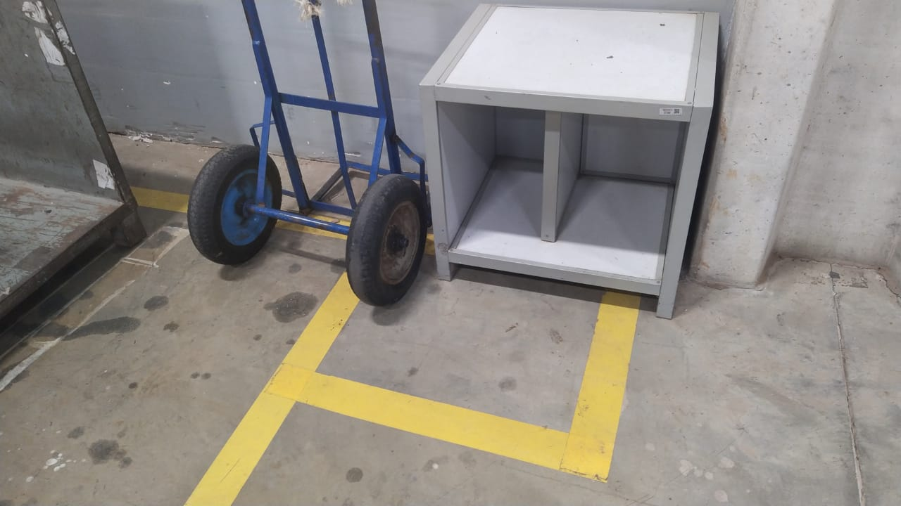

Relatório da Auditoria 5S do mês de Novembro 2024 - 1° Turno
O que é 5S?
O que é o método 5S? A ferramenta 5S é um método que visa melhorar o
ambiente de trabalho e aumentar a produtividade e a qualidade total
das entregas da companhia, tendo como base cinco sensos: utilização,
organização, limpeza, bem-estar e autodisciplina.
Quais são os 5S?
O 5S é um conjunto, desenvolvido no Japão, de cinco práticas destinadas
a promover a organização, a limpeza e a eficiência no ambiente de trabalho.
São elas: Seiri (senso de utilização), Seiton (senso de ordenação),
Seiso (senso de limpeza), Seiketsu (senso de padronização) e Shitsuke
(senso de disciplina).
Áreas de apoio
Expedição

Demais áreas de apoio
Distribuição
Placa segurada por fita adesiva
Chão apresentando sinal de desgaste
Descarga
Escada da doca avariadaSujeira no vão entre as colunas
Paleteira verde com rachadura no manche
Paleteira rosa com sistema hidráulico precisando de manutenção
informações desatualizadas e folha avariada
Tabela da limpeza desatualizada
Inténs pessoais na mesa do ADM

Equipamento sem uso na mesa do ADM
Transferência
Automatic
Vergalhão ainda no mesmo lugar - 3° mês consecutivoGrade ainda com avaria
Portões extremamente sujos
Coleta
Porta palete
Lixo na mesa do setorCapa do sensor sem utilização
Portões sujos
caixas frágeis amassadas
Carrinho e mesa fora da área demarcada

Perdas e Danos
Barras de metel ainda no local inadequado de armazenamento
Copo na mesa do CQO
Grades sem local adequado de armazenamento
Resultado
Auditor 5S - 1° turno
- Danilo Monteiro da Silva
Lider 5S - 1° turno
- Gustavo Otto Souza Kind